3
2
nd
s
Thirty
Second
s
Let op: De minimale benodigdheden voor dit spel zijn 1 laptop/tablet en 1 mobiele telefoon (liefst 1 telefoon per team).
Je hebt een
laptop of tablet
nodig om het speelbord te tonen. Alle spelers moeten het bord kunnen zien.
BORD

Je hebt een
mobiele telefoon
nodig om de vragen te tonen. Deze mag alleen gezien worden door de speler die de antwoorden beschrijft.
VRAGEN
© Rens Wiebenga Design